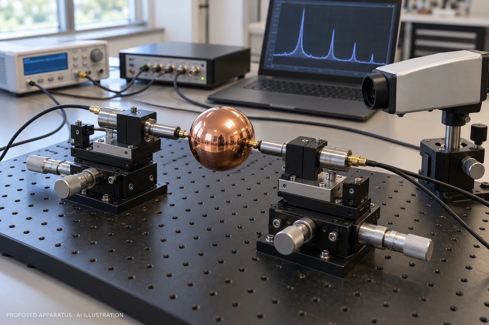
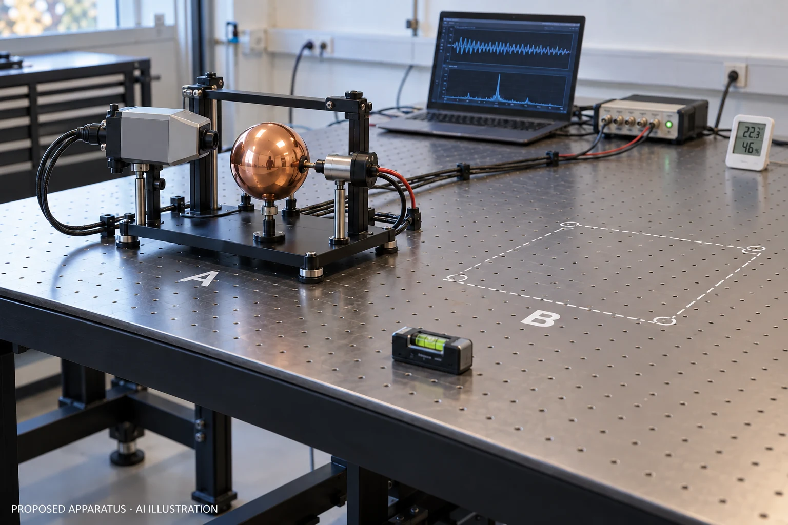
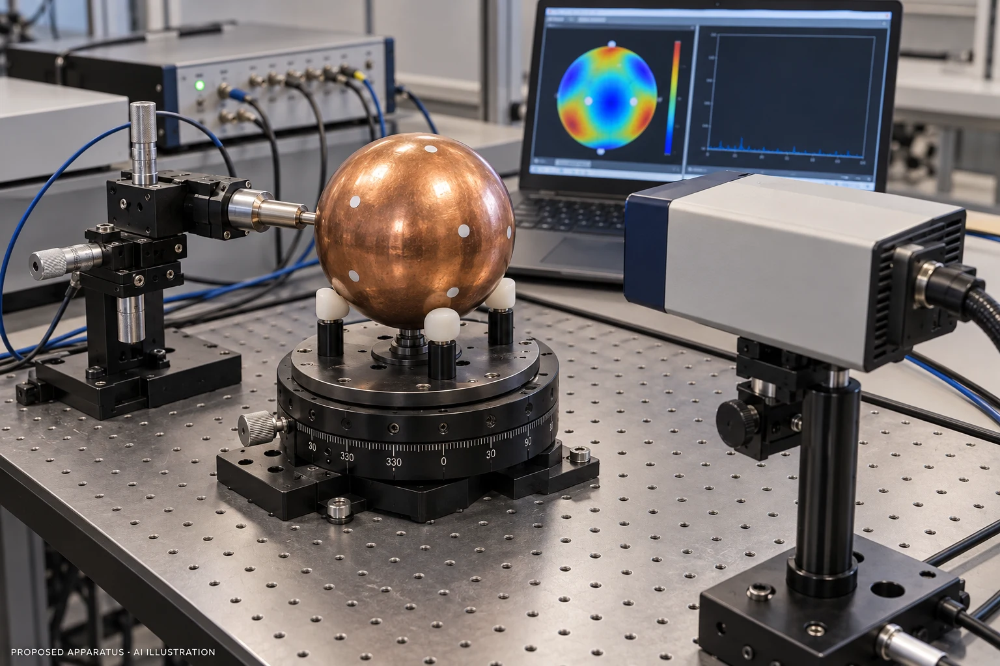
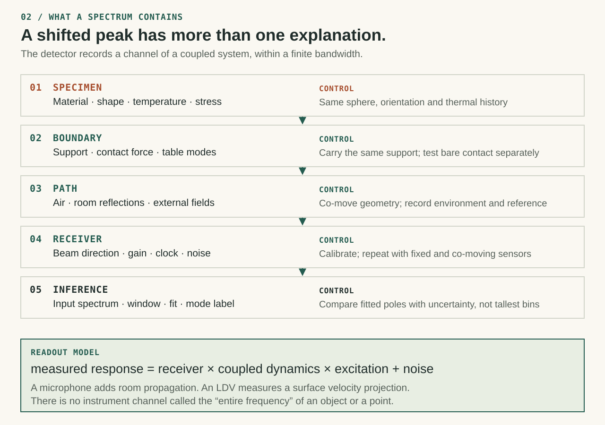
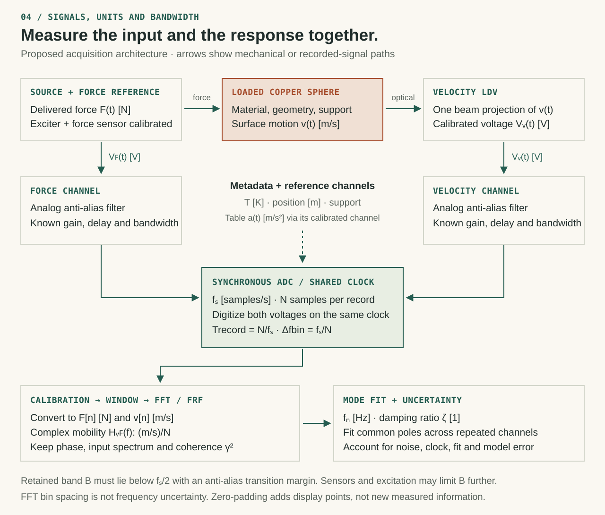
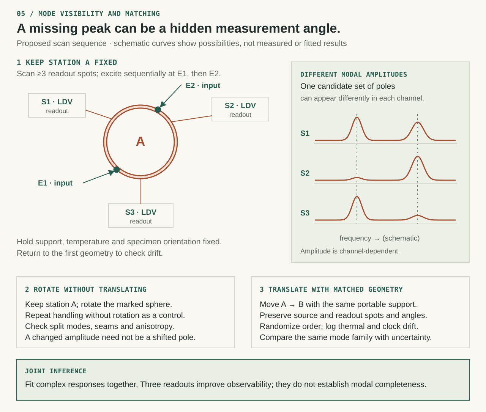

A family of modes.
Material, geometry, stress and temperature determine resonances. The breathing mode here is one member of that family.
THE COPPER SPHERE EXPERIMENT
What changes when a copper sphere moves across a table? Separate the object’s vibration from its surroundings, then design a measurement that can tell them apart.
Interactive model · proposed physical experiment
A → B COMPARISON
The same sphere, measured in two separate runs. A and B are positions along the table.
Amplitude is divided by one shared maximum across both traces. Raw exports retain the model’s units. A response peak can differ from an isolated object’s natural frequency.
READ THE RESULT
Loading the physical model…
This simulation calculates selected mechanical modes. It does not capture every frequency of an object or establish a position-specific frequency that moves matter.
Read the mathematical specification ↗Material, geometry, stress and temperature determine resonances. The breathing mode here is one member of that family.
Supporting a sphere changes its mechanical boundary conditions. A flat table is still a vibrating, load-bearing object.
Excitation, sensor direction and bandwidth determine which modes are visible. A spectrum is a measurement of a defined channel.
AN EVIDENCE MAP
Explore the sources and methods behind this experiment. Every connection has a stated relationship. A shared topic does not establish a shared physical mechanism.
FROM A CLAIM TO A TEST
These are proposed apparatus and procedures. No physical trial or position-dependent anomaly is reported here.
PROPOSED APPARATUS
Generated concept images show the intended working environment. They are not photographs of a built apparatus; screen traces and numeric readouts are illustrative. Use the labeled engineering diagrams and protocol for geometry, connections and controls.

Compare selected sphere modes between lightly loaded transducers. Contact pressure and contact geometry remain part of the error budget.
AI-generated concept · proposed, not built
Keep excitation and readout geometry matched while changing position. Use randomized order and temperature logging.
AI-generated concept · proposed, not built
Probe several surface points and excitation directions. A mode absent from one channel may be visible in another.
AI-generated concept · proposed, not built
PREDICTIONS THAT CAN FAIL


THE MEASUREMENT TOOLCHAIN
EXECUTED SOFTWARE CHECKS
Loading the recorded software benchmark…
Synthetic signals and numerical fixtures only. Passing a software check does not verify a physical specimen. Methods & limitations ↗ · Raw benchmark results ↗
SELECTED SOURCE REGISTER
THE MEASUREMENT IS PART OF THE EXPERIMENT
Sample a known synthetic signal, then inspect what its FFT preserves or hides. The signal below is generated from explicit frequencies; it is not a recording or a fitted physical pole.
KNOWN INPUT → SAMPLED OUTPUT
Sampling boundary—
Input components—
First 256 samples, at most. The full synthetic record is included in the run export.
Frequencies beyond half the sampling rate can fold into the recorded band. The aliased peak is not a new material resonance.
Window shape, decay, record length and mode spacing affect separation. FFT bin spacing alone is neither the full resolution nor an uncertainty interval.
A mode’s coupling to the source and sensor can vanish. Adding sample points in time cannot recover a mode that the measurement does not excite or see.


REPRODUCIBLE SIGNAL MODEL
Explicit sinusoidal components, exponential decay, seeded noise and a radix-2 FFT. The displayed amplitudes use window coherent-gain correction. Ring-down amplitudes still depend on record length and damping.
Equations, tests & limits ↗A DIFFERENCE NEEDS AN ERROR BUDGET
Compare a fitted A/B frequency difference with a declared uncertainty multiplier. Correlation matters: the same timebase error can cancel differently from independent errors.
This calculator uses user-supplied standard uncertainties. The multiplier is a comparison rule, not an automatic confidence level or a significance test.